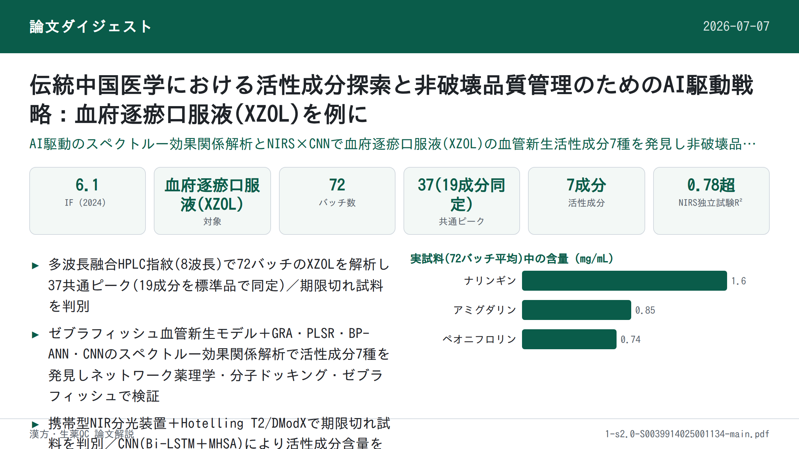

伝統中国医学における活性成分探索と非破壊品質管理のためのAI駆動戦略：血府逐瘀口服液(XZOL)を例に

<!-- 方針: ほぼ全訳＋必要に応じた補足。原文の構成に沿って訳出。「> 補足:」は訳者注。 -->
書誌情報
- 原題: An AI-driven strategy for active compounds discovery and non-destructive quality control in traditional Chinese medicine: A case of Xuefu Zhuyu Oral Liquid
- 著者・所属: Lele Gao, Liang Zhong, Tingting Feng, Jianan Yue, Qingqing Lu, Lian Li, Aoli Wu, Guimei Lin（山東大学 斉魯医学院 薬学院／NMPA医薬品評価技術研究重点実験室, 中国・済南）, Qiuxia He, Kechun Liu（斉魯工業大学(山東省科学院) 生物研究所, 中国・済南）, Guiyun Cao, Zhaoqing Meng（山東宏済堂医薬集団, 中国・済南）, Lei Nie, Hengchang Zang（責任著者, 同・山東大学）
- 掲載誌・巻号・DOI: Talanta 287 (2025) 127627. https://doi.org/10.1016/j.talanta.2025.127627
- インパクトファクター: 6.1（Talanta, JCR 2024 / Clarivate）
- 受理経過: 受領 2024-12-13 / 改訂 2025-01-21 / 採録 2025-01-22 / オンライン公開 2025-01-23
- ライセンス: © 2025 Elsevier B.V.（オープンアクセスの明記なし。テキスト・データマイニング／AI学習を含む権利をElsevierが留保する旨の記載あり）
- キーワード（原文）: Artificial intelligence (AI); Spectrum-effect relationship; Quality control; HPLC fingerprints; Near-infrared spectroscopy; Active compounds
- 資金: 山東省重点研究開発計画（2022CXGC020515）、山東省自然科学基金（ZR2022MB026）、国家重点研究開発計画（2019YFC1711200）
補足: XZOL = 血府逐瘀口服液（Xuefu Zhuyu Oral Liquid）。11種の生薬からなり、清代の医家・王清任『医林改錯』に初出とされる活血化瘀方剤で、冠状動脈性心疾患(CHD)などの心血管疾患に用いられる。本文中の略語: ISVs=節間血管(intersegmental vessels)、GRA=グレー関連解析、PLSR=部分最小二乗回帰、BP-ANN=誤差逆伝播型ニューラルネットワーク、MIV=平均影響値、CNN=畳み込みニューラルネットワーク、Bi-LSTM=双方向長短期記憶ネットワーク、MHSA=マルチヘッド自己注意機構、NIRS=近赤外分光法、MSPC=多変量統計的プロセス管理、DModX=モデルからの距離、RPD=残差予測偏差、DHI=丹紅注射液（陽性対照）、Ch.P.=中国薬局方（2020年版）。
要旨（Abstract）
伝統中国医学(TCM)の近代化・国際化は、活性成分や作用機序の不明確さ、品質管理の不十分さといった課題に直面している。本研究は、血府逐瘀口服液(XZOL)を例として、AI(人工知能)駆動の活性成分探索および非破壊品質管理戦略を提案した。まず、多波長融合高速液体クロマトグラフィー(HPLC)指紋 を構築し、XZOLの化学組成を包括的に特性評価した。次に、PTK787誘発の節間血管(ISVs)損傷ゼブラフィッシュモデル でXZOLの血管新生促進効果を評価した。続いて、グレー関連解析(GRA)・部分最小二乗回帰(PLSR)・誤差逆伝播型ニューラルネットワーク(BP-ANN)・畳み込みニューラルネットワーク(CNN)を組み込んだ スペクトルー効果関係モデル により、7種の血管新生促進活性成分（ヒドロキシサフロールイエローA、ペオニフロリン、フェルラ酸、ナリルチン、ナリンギン、ヘスペリジン、ネオヘスペリジン）を発見した。さらに、これら成分の有効性をネットワーク薬理学・分子ドッキング・ゼブラフィッシュにより検証した。最後に、近赤外分光法(NIRS)に基づく迅速・非破壊の品質管理システム を確立した。本システムは、多変量統計的プロセス管理(MSPC)のHotelling T2とDistance to Model X(DModX)統計量を組み合わせることで期限切れ試料と正常試料を効果的に判別し、双方向長短期記憶(Bi-LSTM)とマルチヘッド自己注意(MHSA)ネットワークを統合したCNNモデルにより上記活性成分の含量を精度よく予測した。本研究は、活性成分に基づくTCMの包括的品質管理戦略を提供することで、AI駆動戦略がTCMの標準化と国際的な認知向上に資する可能性を裏付けるものである。
1. 序論（Introduction）
TCMは植物・鉱物・動物由来の幅広い薬用物質からなり、TCM理論体系に導かれながら数千年にわたり、特に東アジアの医療において重要な役割を果たしてきた。しかし、TCMの近代化・国際化は、①治療効果を担う活性成分・作用機序の曖昧さ、②製剤品質のばらつき、という重大な課題によって制約されている。現行の品質評価は多くの場合、1種または少数のマーカー成分の定量に焦点を当てるが、この手法はTCMの多成分・多標的的性質を捉えるには不十分であり、選定された品質規格の成分が臨床効果と必ずしも関連・代表していない場合がある。これらの課題は、TCM製剤の標準化と臨床での有効性の一貫した保証を困難にしている。
数あるTCM製剤の中でも、血府逐瘀口服液(XZOL)は臨床応用と有効性の広さで際立っており、特に冠状動脈性心疾患(CHD)などの心血管疾患(CVDs)治療に用いられる。TCMにおいてCHDは「胸痹」「心痛」に分類され、血管閉塞が主たる病態機序とされる。XZOLは血府逐瘀湯に由来し、清代の医家・王清任による『医林改錯』に初めて記載された中国十大名方の一つで、11種の生薬から構成され、活血化瘀（血行を促進し瘀血を除く）の作用を持つ。その確立された臨床効果にもかかわらず、XZOLの治療効果、特に血管新生促進活性を担う活性成分は依然としてほとんど解明されていない。さらに、現行の中国薬局方(2020年版, Ch.P.)に収載されたXZOLの品質規格は、アミグダリン・ペオニフロリン・ナリンギンなど少数のマーカー成分に主眼を置くのみで、より広範な活性成分をカバーできていない。これらの制約を克服するには、TCMの包括的品質管理と治療効果の一貫性確保のために、現代的な分析ツールとデータ駆動型アプローチが不可欠である。
ゼブラフィッシュ(Danio rerio)は、独自の利点によって薬効スクリーニングや安全性評価のin vivoモデルとして広く用いられている。ヒトと高い遺伝的相同性を持ち、特に血管新生・血管発生に関わる遺伝子でその傾向が強く、血管新生刺激に対する生物学的経路・応答が保存されているため、ヒトの血管新生過程を予測するモデルとして適している。ゼブラフィッシュ胚の透明性は、血管発生に不可欠で血管新生促進効果評価の信頼できるプラットフォームとなる節間血管(ISVs)形成など、血管新生イベントのリアルタイム・非侵襲的な可視化を可能にする。
クロマトグラフィー指紋はTCM品質評価の有用な手法として確立されてきたが、化学プロファイルと薬理効果を十分に相関させられないという限界がある。この限界に対応するため、統計的手法で化学成分と生物活性を結び付ける スペクトルー効果関係解析 が、活性成分発見の有望な手法として導入されている。この手法は単一の化学マーカーへの依存という限界を克服し、多成分医薬品の品質管理に強力なツールを提供する。しかし、従来のクロマトグラフィー手法は労力・コストがかかり破壊的であるため、試料の消耗や品質管理プロセスの非効率を招く。これらの欠点は、より環境負荷が低く効率的かつ非破壊的な品質管理技術の必要性を浮き彫りにする。この点で、近赤外分光法(NIRS)は有望な解決策として台頭しており、TCMの品質管理に広く応用されてきた。さらに、携帯型NIR分光計は、コンパクトさ・迅速な検出・低コストという大きな利点を備えつつ、据置型モデルに匹敵する高感度・高性能を提供し、リアルタイム・現場分析に理想的である。
AI（特に機械学習）とTCMの統合は、先進技術と伝統医療の融合を象徴する。AIは生薬の精密な真贋鑑定を可能にし、処方最適化を支援し、治療効果・安全性を予測し、個別化された投薬提案を提供する。既存手法と比較して、AIはスペクトルデータと治療効果の間の微妙な関係を明らかにでき、従来法では複雑な非線形相互作用の扱いに限界があるため見落とされがちな新規活性成分の発見を後押しする。さらに、単一成分または狭い範囲の成分に着目する標準的手法とは異なり、AIは多次元データを全体論的観点から処理・解析でき、複数の活性成分を同時に検出することでTCM製剤のリアルタイム品質モニタリング能力を高める。この革新的な相乗効果は、TCM研究開発の効率を大幅に向上させ、品質管理措置を強化し、臨床精度を洗練させ、TCMの近代化と国際的関連性をかつてない水準まで押し上げる。
本研究は、XZOLの血管新生促進を例として、活性成分探索と非破壊品質管理のためのAI駆動戦略を提案した。研究の流れ（Fig. 1）は以下のとおり: (1) 高速液体クロマトグラフィー(HPLC)指紋を構築し全体の化学組成を特性評価する。(2) PTK787誘発ISVs損傷ゼブラフィッシュにおいて、異なるバッチのXZOLの血管新生促進効果を評価する。(3) スペクトルー効果関係解析により活性成分を発見する。(4) ネットワーク薬理学・分子ドッキング・ゼブラフィッシュにより活性成分を検証する。(5) NIRSに基づく迅速・非破壊の品質管理システムを確立する。この戦略は、伝統と近代の橋渡しをしつつTCMの国際標準化・国際化を促進する、活性成分に基づくTCMの包括的品質管理システムを提供する。
補足: 原文 Figure 1（本研究の全体フロー図：①HPLC指紋構築→②ゼブラフィッシュ血管新生評価→③スペクトルー効果関係解析による活性成分発見→④ネットワーク薬理学・分子ドッキング・ゼブラフィッシュによる検証→⑤NIRS非破壊品質管理システム構築、の5段階）を含め、本論文の図はPDFが大容量のためDrive経由での画像抽出ができず、本ページには掲載していない。図の内容は原文参照。
2. 材料と方法（Materials and Methods）
2.1 試料と試薬
72バッチのXZOL（バッチ番号2011004〜2401001）を宏済堂社（Hongjitang Co., Ltd.）から入手した（詳細は原文 Supplementary Material Table S1）。
標準品: クロロゲン酸(CAS 327-97-9)、ヒドロキシサフロールイエローA(CAS 146087-19-6)、アミグダリン(CAS 29883-15-6)、ペオニフロリン(CAS 23180-57-6)、フェルラ酸(CAS 1135-24-6)、エリオシトリン(CAS 13463-28-0)、ナリルチン(CAS 14259-46-2)、ナリンギン(CAS 10236-47-2)、ヘスペリジン(CAS 520-26-3)、ネオヘスペリジン(CAS 13241-33-3)、ナリンゲニン(CAS 480-41-1)、グリチルリチン酸アンモニウム塩(CAS 53956-04-0)、リクイリチゲニン(CAS 578-86-9)、ケンフェロール(CAS 520-18-3)、ノビレチン(CAS 478-01-3)は成都Herbpurify社（HPLC純度≥98%）から購入。シネフリン(CAS 94-07-5)・5-ヒドロキシメチルフルフラール(CAS 67-47-0)・没食子酸(CAS 149-91-7)はYuanye Bio-Technology社（HPLC≥98%）、タンゲレチン(CAS 481-53-8)はPureChem Standard社（HPLC≥98%）から購入。クロマトグラフィーグレードのアセトニトリルは安徽TEDIA社、ギ酸はAladdin Biochemical Technology社、精製水は娃哈哈集団（中国）から供給された。
Pronase E(CAS 9036-06-0)・トリカイン(CAS 582-33-2)・フェニルチオ尿素(PTU, CAS 103-85-5)はSoleibao Technology社、Vatalanib(CAS 212141-54-3, PTK787)は南通飛宇生物科技社から購入。丹紅注射液(DHI、バッチ番号230610112)は山東歩長製薬から入手。DMSOはSangon Biotech(上海)社、CuSO₄・5H₂Oなど各種試薬はSinopharm Chemical Reagent社から購入した。
2.2 XZOLのHPLC指紋
XZOLの化学組成は、フォトダイオードアレイ検出器(DAD)を備えたAgilent 1260 HPLCシステムで特性評価した。クロマトグラフィー分離はAgilent ZORBAX SB-C18カラム（250 mm × 4.6 mm, 5 μm）で実施。移動相は0.2%ギ酸水溶液(A)とアセトニトリル(B)で、グラジエント溶出は: 0–15 min, 3–12% B; 15–30 min, 12–16% B; 30–40 min, 16–20% B; 40–50 min, 20–26% B; 50–60 min, 26–45% B; 60–70 min, 45–95% B; 70–80 min, 95% B、流速1.2 mL/min。カラム温度35 ℃、注入量10 μL。検出は複数波長（210 nm, 237 nm, 254 nm, 280 nm, 300 nm, 330 nm, 367 nm, 403 nm）で実施した。
2.3 ゼブラフィッシュにおけるXZOLの血管新生促進効果
2.3.1 ゼブラフィッシュ胚の採取
トランスジェニック系統Tg(flk1:EGFP)ゼブラフィッシュ（内皮細胞が高感度緑色蛍光タンパク質を発現し血管系の直接観察が可能）は、山東省科学院・薬物スクリーニング重点実験室から提供された。成魚の雄雌を1:1で交配して胚を得た。受精後、胚を洗浄し、5 mM NaCl・0.17 mM KCl・0.33 mM CaCl₂・2H₂O・0.16 mM MgSO₄・7H₂Oと0.1%メチレンブルーからなる培養液に移した。培養液は28 ℃に維持した。メラニン産生を抑制するため、受精後6時間(hpf)に0.003% PTUを培養液に添加した。すべてのゼブラフィッシュは山東省科学院生物研究所・実験動物福祉倫理委員会の承認（承認番号SWS20210815）のもとで使用した。
2.3.2 ゼブラフィッシュの処置
XZOLの血管新生促進効果を評価するため、原系統のゼブラフィッシュを使用した。本試験に先立ち、XZOLの安全濃度を評価し、PTK787およびXZOLの至適濃度を決定した。21–22 hpfで、1 mg/mLのPronase E溶液を用いて胚膜を除去した。続いて、健常に発生した胚を選び、24ウェルプレートに1ウェルあたり10匹ずつ配置した。4群を設定: 対照群、モデル群（PTK787 0.15 μg/mL）、陽性対照群（PTK787 0.15 μg/mL + DHI 30 μL/mL）、XZOL群（PTK787 0.15 μg/mL + 各バッチのXZOL 2 μL/mL）。24時間後、Olympus IX73倒立蛍光顕微鏡でゼブラフィッシュの画像を取得した。ISVsの全長はImageJ-win64ソフトウェアで定量し、血管新生促進効果を以下の式(1)で算出した。GraphPad Prism 9.5.0ソフトウェアで一元配置分散分析(ANOVA)を行い、有意水準はp<0.05とした。すべての実験は3連で実施した。
血管新生促進効果(%) = (L_sample − L_model) / L_model × 100% …(1)
（L_sampleはXZOLまたはDHI群のISVs長、L_controlは対照群のISVs長、L_modelはモデル群のISVs長を表す）
2.4 スペクトルー効果関係解析
2.4.1 グレー関連解析（GRA）
GRAは複数変数間の相関度を評価する多因子解析手法である。本研究では、XZOLの血管新生促進効果とHPLCピーク面積の関係評価に用いた。関連度>0.6は共通ピークと血管新生促進効果の間に相関があることを、>0.8は高度に有意な相関があることを示す。
2.4.2 部分最小二乗回帰分析（PLSR）
PLSRは、HPLCピーク面積(X)と血管新生促進効果(Y)の線形関係を解析する多重線形回帰法である。回帰係数の正負は化合物が血管新生に与える方向を示し、正の回帰係数を持つ化合物はISVsの成長を促進する、すなわち血管新生における役割を持つと同定された。変数重要度投影(VIP)値は各化合物の血管新生に対する重要度を示し、VIP>1の化合物は血管新生の重要な寄与因子とみなされた。
2.4.3 誤差逆伝播型ニューラルネットワーク（BP-ANN）
BP-ANNは入力層・隠れ層・出力層からなる逆伝播法を用いたフィードフォワード型ニューラルネットワークである。本研究では、HPLCピーク面積が血管新生促進効果に与える影響を定量化するため、平均影響値(MIV)解析と組み合わせて用いた。具体的には、入力値に±10%の調整を加え、独立変数の変化が出力結果に与える影響値(IV)を算出することで、各変数の影響を評価した。MIVはIVの平均値であり、その正負は各入力と出力の関係の相関方向を、絶対値は影響度を示す。BP-ANNとMIV解析の組み合わせは、モデルの解釈性と信頼性を高め、どの化合物が血管新生に最も寄与するかの発見に役立った。
2.4.4 畳み込みニューラルネットワーク（CNN）
CNNは構造化データの処理・解析のために設計された先進的な深層学習アーキテクチャである。本研究では、血管新生促進効果に関連する活性成分の発見にCNNモデルを用いた。CNNアーキテクチャの逐次依存関係のモデル化能力を高めるため、順方向・逆方向の両方から時間的依存関係を捉える再帰型ニューラルネットワークの一種である双方向長短期記憶(Bi-LSTM)ネットワークを統合した。この双方向学習アプローチにより、モデルは時系列データや動的な設定内のパターン解析を要するタスクにおいて特に重要な、逐次データの文脈をより完全に理解できる。さらに、CNNアーキテクチャ内にマルチヘッド自己注意(MHSA)機構を組み込んだ。これにより、モデルは複数の文脈関連特徴に同時に着目できる。従来の注意機構と異なり、MHSAはモデルが入力データの異なる部分に独立して注意を向けることを可能にし、多様な観点からデータ内の複雑な関係を捉える。これにより、関連性に応じて様々な特徴に異なる重要度を割り当てられるため、複雑なパターンの処理・理解能力が向上する。Bi-LSTMによる双方向学習とMHSAによる多面的注意というこれらの強化は、CNNモデルの性能を総合的に向上させ、複雑な高次元データを効率的に処理し、より精度の高い予測と解釈可能性の向上を実現する。さらに、様々な機能層での特徴マップの可視化は、変数変動の動的表現を提供し、重要変数の同定に新たな知見をもたらす。
2.5 活性成分の検証
スペクトルー効果関係解析で発見された活性成分の治療可能性を包括的に検証するため、ネットワーク薬理学と分子ドッキング技術を用いた。これらの手法により、潜在的な標的・経路の系統的探索が可能となり、治療効果のin silicoでの初期検証を行った（詳細は原文補足資料）。さらにゼブラフィッシュモデルを用いてin vivo検証を行った。標準化合物はDMSOに溶解し100 mMのストック溶液を調製し、実験群では希釈系列によりその効果を評価した。
2.6 迅速・非破壊品質管理システム
2.6.1 システム開発とスペクトル取得
品質管理システムは、タングステンハロゲン光源(HL-2000-FHSA-LL, Ocean Optics, 中国)、3Dプリント製サンプルセル、携帯型NIR分光計(SW2540, OTO Photonics Inc., 中国)、2本の光ファイバー(広州晶谊光電科技社, 中国)、自社開発ソフトウェア（原文 Supplementary Material Fig. S1）から構成される。本システムは、直径約19 mmの精密に調整されたバイアルホルダー内に試料を無傷のまま保持することで光路の精密な位置合わせを確保し、非侵襲的なスペクトル解析手法を導入した。
スペクトル取得前に、機器の温度変動を安定範囲内に保つため装置を1時間安定化させた。波長範囲は約900–1700 nm、変数248点。パラメータは積算時間8 msで最適化し、各スペクトルは50回スキャンの累積平均とした。ソフトウェアの元出力データは光強度であり、生スペクトルは以下の式(2)により元データを変換して取得した。参照スペクトルは空気により、暗スペクトルは光源を消灯して取得した。操作誤差を減らすため、各試料につき3回連続でスペクトルを取得し、平均スペクトルを最終スペクトルとした。本システムはスペクトルの信頼性を高めるとともに試料の完全性を保持し、非破壊分析への可能性を示す。
A = −log[(I_sample − I_dark) / (I_ref − I_dark)] …(2)
（I_sample、I_ref、I_darkはそれぞれ試料・空気・暗状態の強度値）
2.6.2 モデル構築と評価
XZOLの品質管理は定性・定量の両側面から構成した。定性面では、実試料由来のXZOL試料（72試料）の使用期限を評価した。定量面では、濃縮・希釈法により増幅した活性成分の含量を検出した（280試料）。
定性解析には、主成分分析(PCA)を用いて元の変数を主成分(PCs)に変換し、試料間の分散を捉えることで高次元複雑データを低次元化した。PCAに基づく多変量統計的プロセス管理(MSPC)手法、具体的にはHotelling's T²とDModX(Distance to Model X)を用いて試料の使用期限を評価した。
定量解析には、線形のPLSRと非線形のCNNモデルを適用し活性成分含量を予測した。PLSRモデルは異なる前処理法・変数選択法を用いて構築し、頑健なモデル開発アプローチを示した。CNNモデルはBi-LSTMとMHSAで拡張し、スペクトルー効果関係解析で用いたものと同一のネットワーク構造を採用した。この革新的な統合は、モデルの予測力を高めるだけでなく、品質管理と活性成分探索研究における深層学習アーキテクチャの多用途性・適応性を裏付ける。モデルの有効性は、較正(R²c)・検証(R²v)・独立試験(R²t)の決定係数、および較正・検証・独立試験の二乗平均平方根誤差(RMSEC・RMSEV・RMSET)を用いて評価した。R²値が高くRMSE値が低いモデルほど信頼性・精度が高いとみなした。加えて、残差予測偏差(RPD)を用いてモデルを評価し、許容閾値はRPD値>2とした。対応のあるt検定(α=0.05)により、NIRSの予測値とHPLCの実測値との間に有意差があるかを評価した。
3. 結果と考察（Results and Discussions）
3.1 HPLC指紋の構築
単一波長クロマトグラムではTCMの複雑さを十分に捉えられないという課題に対応するため、多波長融合HPLC指紋を用い、HPLCの3次元情報を最大化してXZOLのより包括的な品質評価を行った。HPLC指紋は複数波長（Fig. 2(a)）で取得し、最大値融合法を用いて多波長融合HPLC指紋（黒線）を得た。この指紋は理論上、8波長にわたるデータの投影を表す。210 nm付近では溶媒を含む多くの成分が強い応答を示すため、この波長はアミグダリンの定量にのみ用いた。異なるXZOLバッチの融合HPLC指紋を比較したところ（Fig. 2(b)）、37個の共通ピークが観察され（Fig. 2(c)）、総ピーク面積の95%超を占めた。これらのピークのうち 19ピークが標準品により同定 された: シネフリン(1)、没食子酸(6)、5-ヒドロキシメチルフルフラール(8)、クロロゲン酸(13)、ヒドロキシサフロールイエローA(14)、アミグダリン(16)、ペオニフロリン(19)、フェルラ酸(20)、エリオシトリン(21)、ナリルチン(24)、ナリンギン(25)、ヘスペリジン(26)、ネオヘスペリジン(27)、リクイリチゲニン(29)、ナリンゲニン(31)、ケンフェロール(32)、グリチルリチン酸(34)、ノビレチン(36)、タンゲレチン(37)。
融合HPLC指紋について直線性・精度・再現性・安定性・回収率を検証した。Table 1にまとめたとおり、直線性の相関係数(R²)はいずれも0.9900を上回り、精度・再現性・安定性の相対標準偏差(RSD)はいずれも5.00%未満であった。回収率は95.01%〜109.38%、RSDは5.00%未満であった。これらの結果は、HPLC指紋法が優れた精度・正確さ・安定性・再現性を有し、XZOLの品質評価に適することを裏付ける。しかし、72バッチのXZOLにおけるアミグダリン・ペオニフロリン・ナリンギンの平均含量はそれぞれ 0.85, 0.74, 1.60 mg/mL であり、これは現行のCh.P.が定める最低基準値（それぞれ0.67, 0.25, 0.66 mg/mL）を大きく上回っていた。期限切れ試料でさえこれらの基準を満たしており、現行の品質管理基準の不十分さを一層浮き彫りにした。
補足: 原文 Figure 2（(a) 8波長のHPLC指紋とその融合HPLC指紋、(b) 72バッチXZOLの融合HPLC指紋、(c) XZOL試料と標準品の融合HPLC指紋、(d) 類似度ヒートマップ、(e) PCAスコアプロット、(f) 融合HPLC指紋のHCAデンドログラム）は原文参照（本ページには図画像を掲載していない）。
Table 1. XZOL中の各化合物の検量線・精度・再現性・安定性・回収率（n=6）
| Peak No. | 化合物 | 検出波長(nm) | 検量線 | R² | 直線範囲(mg/mL) | 精度RSD(%) | 再現性RSD(%) | 安定性RSD(%) | 回収率(%) | 回収率RSD(%) |
|---|---|---|---|---|---|---|---|---|---|---|
| 1 | シネフリン | 280 | y=1110.9x−6.5726 | 0.9997 | 0.0226–0.9664 | 1.58 | 0.97 | 1.71 | 99.79 | 2.65 |
| 6 | 没食子酸 | 280 | y=11509x+24.82 | 0.9998 | 0.0074–0.5888 | 1.88 | 2.12 | 2.01 | 108.62 | 2.97 |
| 8 | 5-ヒドロキシメチルフルフラール | 280 | y=29621x−160.1 | 0.9997 | 0.0100–0.8000 | 3.60 | 1.63 | 3.52 | 105.32 | 3.04 |
| 13 | クロロゲン酸 | 330 | y=9584.6x+30.816 | 0.9930 | 0.005095–0.5095 | 2.05 | 0.44 | 2.93 | 95.01 | 2.15 |
| 14 | ヒドロキシサフロールイエローA | 403 | y=5951x−15.454 | 0.9995 | 0.0090–1.0824 | 1.86 | 1.35 | 1.95 | 102.32 | 3.91 |
| 16 | アミグダリン | 210 | y=2736.1x−96.214 | 0.9988 | 0.0204–4.0720 | 2.79 | 2.57 | 3.40 | 103.87 | 2.88 |
| 19 | ペオニフロリン | 237 | y=3480.93x+6.63 | 0.9998 | 0.0404–4.8480 | 0.81 | 1.95 | 1.88 | 103.08 | 0.26 |
| 20 | フェルラ酸 | 300 | y=16962x+25.917 | 0.9999 | 0.0249–0.9952 | 1.68 | 1.16 | 1.98 | 107.58 | 4.70 |
| 21 | エリオシトリン | 280 | y=6294.2x+2.7652 | 0.9998 | 0.0020–0.0800 | 1.88 | 2.40 | 1.38 | 109.38 | 2.46 |
| 24 | ナリルチン | 280 | y=5904.1x+15.652 | 0.9994 | 0.0214–0.6840 | 0.11 | 0.25 | 0.36 | 99.04 | 0.33 |
| 25 | ナリンギン | 280 | y=6114.3x+146.47 | 0.9992 | 0.0242–2.8992 | 0.37 | 0.25 | 0.35 | 99.98 | 0.91 |
| 26 | ヘスペリジン | 280 | y=8584.4x−21.938 | 0.9994 | 0.0045–0.7216 | 0.11 | 0.19 | 0.40 | 103.13 | 2.61 |
| 27 | ネオヘスペリジン | 280 | y=7158.2x−17.973 | 0.9997 | 0.0291–2.7912 | 0.07 | 0.17 | 0.29 | 101.58 | 0.96 |
| 29 | リクイリチゲニン | 237 | y=20861x−98.649 | 0.9991 | 0.0048–0.3824 | 0.55 | 0.16 | 0.43 | 96.29 | 2.69 |
| 31 | ナリンゲニン | 280 | y=14097x+2.9713 | 0.9999 | 0.0019–0.1499 | 1.26 | 0.64 | 1.00 | 99.75 | 2.93 |
| 32 | ケンフェロール | 367 | y=13535x−27.958 | 0.9969 | 0.0199–0.3984 | 3.20 | 3.46 | 3.34 | 107.11 | 1.81 |
| 34 | グリチルリチン酸 | 237 | y=567.16x−13.545 | 0.9918 | 0.0330–0.3304 | 0.32 | 0.80 | 0.59 | 108.32 | 1.98 |
| 36 | ノビレチン | 330 | y=14925x−1.8158 | 0.9999 | 0.0016–0.1280 | 0.11 | 0.54 | 0.64 | 98.11 | 1.65 |
| 37 | タンゲレチン | 330 | y=14305x+3.2934 | 0.9999 | 0.0015–0.1176 | 0.31 | 0.54 | 0.53 | 102.64 | 2.80 |
融合HPLC指紋の類似度は、期限切れ試料を除くすべてのバッチで 0.9超 であり、一貫した品質と使用期限設定の妥当性を示した（Fig. 2(d)）。PCAによる次元削減の結果、PC1・PC2はそれぞれ全分散の 41.79%・24.40%（累積寄与率 66.19%）を占めた（Fig. 2(e)）。特に、期限切れ試料S1–S7は95%信頼区間を超え、正常試料との有意な差を示した。階層的クラスタリング解析(HCA)は「ユークリッド距離」と「平均連結法」を用い、さらに試料を区別した。デンドログラム（Fig. 2(f)）が示すとおり、期限切れ試料と正常試料の相対距離は約 40 であった。加えて、使用期限に近い試料S9・S8・S12・S13も異常試料として同定された。
融合HPLC指紋の類似度・HCA・PCAの結果は、期限切れ試料と正常試料の判別における多波長融合HPLC指紋の有効性を総合的に示した。同定ピークのうち、ナリンギンとネオヘスペリジンは正常試料と期限切れ試料の間で有意差を示した。XZOLの血管新生促進効果は複数の化学成分に影響されることから、活性成分発見のためのスペクトルー効果関係モデルなど、さらなるケモメトリクス解析が必要とされた。
3.2 ゼブラフィッシュモデルにおける血管新生促進効果の評価
ゼブラフィッシュ胚に対するXZOLの毒性試験により、最小致死濃度(LC1)・10%致死濃度(LC10)・半数致死濃度(LC50)はそれぞれ 4.090, 5.580, 7.418 μL/mL と定められた（原文 Supplementary Material Fig. S2）。Fig. 3(a)・(b)に示すとおり、ISVsの長さはPTK787濃度の増加に伴い漸減した。0.15 μg/mLにおいて、PTK787はISVsの成長率を顕著に抑制した一方、XZOLはこの抑制を効果的に相殺した（代表画像は原文 Supplementary Material Fig. S3）。Fig. 3(c)に示すとおり、1・2・4 μL/mLのXZOLはISVs成長を有意に回復させ、2 μL/mL で最大の効果が認められた（代表画像は原文 Supplementary Material Fig. S4）。
異なるXZOLバッチのさらなる評価により、その血管新生促進効果が確認された（Fig. 3(d)）。ISVs成長率はモデル群で対照群より有意に低く、陽性対照群ではモデル群より有意に高かった。試験したすべてのXZOLバッチで血管新生促進効果が認められたが、バッチ間で差が観察され（Fig. 3(e)）、この変動は正規分布に従った（Fig. 3(f)）。さらに、期限切れXZOL試料の解析では、正常試料と比較して血管新生促進効果が低いことが明らかになり（Fig. 3(g)）、保存期間中にXZOLの化学組成が変化していることを示唆した。保存期間中の成分変化を定量するにはさらなる解析が必要とされた。
補足: 原文 Figure 3（ゼブラフィッシュ胚におけるXZOLのISVs成長促進効果：(a) PTK787濃度によるISVs長の変化、(b) PTK787濃度によるISVs成長率への影響、(c) XZOL濃度によるISVs成長率への影響、(d) 期限切れ・正常試料のISVs代表画像、(e) 異なるXZOLバッチのISVs成長率への影響、(f) 成長率の分布、(g) 使用期限によるISVs成長率への影響。平均値±SEM, n=10）は原文参照。
3.3 スペクトルー効果関係による活性成分の発見
GRAを用いて共通ピーク面積と血管新生促進効果の相関を検討した。データ変換とグレー関連度算出の結果、すべてのピークが0.6超の関連度 を示し、XZOLの血管新生促進効果が複数成分の相乗作用に由来する可能性を示唆した。Fig. 4(a)のとおり、7成分(P3, P28, P30, P31, P32, P36, P37)は低相関領域（関連度<0.8）にあり、血管新生への寄与が限定的と考えられた。このうちピーク31, 32, 36, 37はそれぞれナリンゲニン・ケンフェロール・ノビレチン・タンゲレチンと同定された。一方、P2, P14, P18, P22, P25は最も高い関連度（>0.8）を示し、血管新生への有意な寄与が示唆された。P14とP25はそれぞれヒドロキシサフロールイエローAとナリンギンと同定された。
共通ピーク面積と血管新生促進効果の関係はさらにPLSRで検討した。外れ値除去後の72バッチXZOLを、x-y結合距離に基づくサンプルセット分割法を用いて較正セットと検証セット（2:1比）に分割した。オートスケーリング法による前処理後、5分割交差検証により 5個の潜在変数(LVs) を決定した。構築した予測モデルは高い予測精度を示した（Fig. 4(h)）。Fig. 4(b)より、37共通ピークのうち 16成分（P1, P14, P16, P18, P19, P20, P21, P24, P25, P26, P27, P28, P31, P32, P36, P37）がVIP値>1を示し（Fig. 4(c)）、血管新生における潜在的重要性が示唆された。特にピーク14, 19, 20, 24, 25, 26, 27は正の回帰係数を示し、これらの化合物が血管新生を促進しうることが示唆された。
BP-ANNモデルはPLSRと同一のサンプル分割法で構築し、そのアーキテクチャをFig. 4(d)に示す。Fig. 4(i)のとおり、較正セット・検証セットのいずれもR²値がPLSRよりさらに向上し、BP-ANNモデルが優れた非線形フィッティング効果を持つことを示した。MIV値>0の化合物は血管新生促進効果と正の相関を示し、MIV値が高いほど血管新生促進効果が強い。Fig. 4(e)のとおり、20成分（P2, P3, P4, P6, P8, P10, P12, P14, P18, P19, P20, P22, P24, P25, P26, P27, P30, P32, P33, P35）でMIV値>0であり、うちP2, P14, P19, P20, P24, P25, P26, P27は大きなMIV値を示し、血管新生を促進する可能性が示唆された。P5, P11, P16, P28, P34, P36, P37のMIV値は0未満で絶対値が大きく、血管新生を抑制する可能性が示唆された。
CNNの強力な特徴抽出能力により、共通ピーク面積と血管新生促進効果の複雑な関連性を明らかにできた。本研究で用いたCNNのアーキテクチャをFig. 4(g)に示す。CNNモデルの結果（Fig. 4(j)）は、PLSR・BP-ANNより優れたモデル性能を示した。Fig. 4(f)の主要層の可視化では、P14, P15, P18, P19, P20, P24, P25, P26, P27が明瞭な特徴を示した。
スペクトルー効果関係（共通ピーク面積と血管新生促進効果）はGRA・PLSR・MIVを統合したBP-ANN・CNNを用いて包括的に解析され、この多次元解析により 7個のクロマトグラフィーピークが潜在的活性成分として予備的に同定 された: ヒドロキシサフロールイエローA(14)、ペオニフロリン(19)、フェルラ酸(20)、ナリルチン(24)、ナリンギン(25)、ヘスペリジン(26)、ネオヘスペリジン(27)。これらの化合物の有効性は、続いてネットワーク薬理学・分子ドッキング・ゼブラフィッシュによりさらに検証され、XZOLの治療効果への重要な寄与因子としての可能性が確認された。
補足: 原文 Figure 4（多波長融合HPLC指紋共通ピーク面積と血管新生促進効果の関係：(a) GRA関連度プロット、(b) PLSRモデルVIP値プロット、(c) PLSRモデル回帰係数プロット、(d) BP-ANNモデルのモジュール構造、(e) BP-ANNモデルMIV値プロット、(f) CNNモデル主要層の特徴、(g) CNNのモジュール構造、(h–j) 成長率の実測値対予測値プロット）は原文参照。
3.4 ネットワーク薬理学・分子ドッキング・ゼブラフィッシュモデルによる活性成分の検証
ネットワーク薬理学予測では、化合物と疾患標的の間で 99個の共通標的 が見出され、CHD治療における重要性が示唆された（Fig. 5(a)）。構築した化合物-標的-疾患ネットワーク（Fig. 5(b)）の解析により、7化合物すべてが高い次数中心性を示し、これらの化合物がCHD治療に関わる主要な分子ネットワークの調節において中心的な役割を果たしうることが示唆された。さらに、タンパク質間相互作用(PPI)解析により、CHD治療において中心的な標的として ALB, GAPDH, IL1B, PTGS2, FN1, EGFR, MMP9, CASP3, STAT3, SRC が同定された（Fig. 5(c)）。DAVIDプラットフォームによる遺伝子オントロジー(GO)エンリッチメント解析では、治療効果に関わる重要な生物学的プロセス(BP)として蛋白質分解と遺伝子発現の負の制御が明らかになった。細胞成分(CC)は主に細胞膜に関連し、分子機能(MF)は同一タンパク質結合において主要な役割を示した（Fig. 5(d)）。京都遺伝子ゲノム百科事典(KEGG)経路エンリッチメント解析では、PI3K-Akt・VEGFシグナル伝達経路などXZOLが関与する複数の重要経路がさらに明らかになった（Fig. 5(e)）。ネットワーク薬理学に加え、分子ドッキング解析（Fig. 5(f)）は活性成分とコア標的との間に強い結合親和性（≤−4.0 kcal/mol）を示し、特にナリルチンの治療上の関連性を裏付ける結果となった。フェルラ酸は他の化合物より結合が弱かったものの、全体の有効性に有意義に寄与した。
これら7種の活性成分の血管新生調節効果はゼブラフィッシュモデルで検証された（Fig. 5(g–m)、代表画像は原文 Supplementary Material Fig. S5）。ISVs成長率はモデル群で対照群より有意に抑制された。7つの血管新生促進候補はいずれもISV成長の増強を示したが、フェルラ酸のみ高濃度で効果の減弱を示し、この結果は分子ドッキング結果とも一致した。これらの結果は、スペクトルー効果関係モデル、特にBP-ANNアプローチによる活性成分発見の信頼性を裏付けた。最終的に、ヒドロキシサフロールイエローA・ペオニフロリン・フェルラ酸・ナリルチン・ナリンギン・ヘスペリジン・ネオヘスペリジンが血管新生促進の活性成分として確認され、活性成分探索におけるAI駆動戦略の革新的な役割が強調された。
補足: 原文 Figure 5（(a–e) XZOLのCHD治療に関するネットワーク薬理学予測：ベン図・化合物-標的-疾患ネットワーク・PPI解析・GO/KEGGエンリッチメント解析、(f) 分子ドッキング結果ヒートマップ、(g–m) 各活性成分がISVs成長率に与える影響。平均値±SEM, n=10）は原文参照。
3.5 迅速・非破壊品質管理システムの確立
本研究では、Fig. 6(a)に示すとおり自社開発NIRSシステムでスペクトルを取得した。全XZOL試料の生NIRスペクトルをFig. 6(b)に示し、本システムが非破壊的に高品質データを取得できることを示した。
3.5.1 定性判別
Hotelling T²・DModX統計量を用いた管理図解析でXZOL試料を厳密に評価し、管理限界はそれぞれ 2.4766・10.1665 に設定した。Fig. 6(c)・(d)のとおり、試料S1, S2, S3, S5, S7–S13はHotelling T²限界を超え、試料S1–S7, S9, S11–S13はDModX限界を超えた。この2つの統計量の統合により、期限切れ試料と正常試料の精密な判別が可能となり、TCM生産におけるライフサイクル管理という重要課題に対応した。
3.5.2 定量検出
外れ値除去後（原文 Supplementary Material Fig. S6）、残った試料を較正・検証・独立試験セットに 3:1:1 の比率で分割し、XZOLの7種の活性成分（ヒドロキシサフロールイエローA・ペオニフロリン・フェルラ酸・ナリルチン・ナリンギン・ヘスペリジン・ネオヘスペリジン）についてPLSR・CNNモデルを構築した。Table 2に詳述するパフォーマンスパラメータは、R²c・R²vともに0.80超、RPDv値が2を大きく上回ることを示し、検証セットにおける頑健な予測能力を示した。独立試験試料についても、すべてのモデルで R²t値が0.80超、RPD値が2を上回る予測が示された。加えて対応のあるt検定により、NIRS予測値とHPLC実測値の間に有意差は認められず（P>0.05）、活性成分定量における従来のHPLC法の代替としてのNIRSの信頼性・正確性を裏付けた。特に、CNNモデルはPLSRモデルより一貫して精度が高く、RPDt値がやや高く、予測値が1:1直線に近く一致した（Fig. 6(e–k)、原文 Supplementary Material Fig. S7）。これは、CNNモデルがXZOL中の活性成分定量においてPLSRより精密で信頼性の高い予測を提供することを示した。計算速度の面では、CNNモデルはそのより複雑なアーキテクチャゆえにPLSRモデルより訓練時間を要する。しかし、いったん訓練されればCNNモデルは特にリアルタイム応用において著しく高速な予測時間を提供し、迅速な意思決定が重要となるTCM品質管理においてCNNを高度に適したものにしている。さらに、CNNの大規模データ処理能力と新規パターンへの適応能力は、動的かつ高スループットな環境における有用性を一層高める。
HPLCはTCM製剤中の化合物の定性・定量分析の従来法であり続けているが、時間を要し、多くの試料前処理を必要とし、安全性・環境面の懸念を生じうる溶媒・試薬の使用を伴う。加えて、HPLC法は通常、熟練した操作者と各バッチでの広範な分析法バリデーションを必要とするため、大規模応用には適さない。対照的にNIRSは迅速・非破壊・正確かつ環境に優しい代替手段であり、TCM製剤の生産中のバッチ間一貫性モニタリングと品質保証に特に有利である。この先進的AIとNIRSの組み合わせは、TCM品質管理に強力なツールを提供し、産業規模の応用に不可欠な迅速な意思決定の可能性をもたらす。
補足: 原文 Figure 6（(a) 品質管理システム、(b) XZOL試料の生NIRスペクトル、(c–d) Hotelling T²・DModX管理図による定性判別結果、(e–k) 最適CNNモデルの実測値対予測値プロットによる定量検出結果）は原文参照。
Table 2. PLSR・CNNモデルのパラメータ結果
単位: RMSEC/RMSEV/RMSETはmg/mL。
| モデル | 活性成分 | RMSEC | R²c | RMSEV | R²v | RPDv | RMSET | R²t | RPDt | P値(α=0.05) |
|---|---|---|---|---|---|---|---|---|---|---|
| PLSR | ヒドロキシサフロールイエローA | 0.0273 | 0.8178 | 0.0300 | 0.7947 | 2.2070 | 0.0240 | 0.8355 | 2.4654 | 0.7663 |
| PLSR | ペオニフロリン | 0.1436 | 0.8666 | 0.1329 | 0.8713 | 2.7880 | 0.1320 | 0.8394 | 2.4953 | 0.8382 |
| PLSR | フェルラ酸 | 0.0068 | 0.8099 | 0.0064 | 0.8406 | 2.5050 | 0.0052 | 0.8620 | 2.6920 | 0.1094 |
| PLSR | ナリルチン | 0.0202 | 0.8455 | 0.0227 | 0.7637 | 2.0574 | 0.0181 | 0.7805 | 2.1344 | 0.1170 |
| PLSR | ナリンギン | 0.2082 | 0.9349 | 0.1776 | 0.9504 | 4.4892 | 0.1997 | 0.9210 | 3.5583 | 0.6252 |
| PLSR | ヘスペリジン | 0.0144 | 0.8986 | 0.0139 | 0.9020 | 3.1950 | 0.0141 | 0.8770 | 2.8518 | 0.2162 |
| PLSR | ネオヘスペリジン | 0.1294 | 0.9336 | 0.1229 | 0.9441 | 4.2289 | 0.1052 | 0.9515 | 4.5396 | 0.9307 |
| CNN | ヒドロキシサフロールイエローA | 0.0233 | 0.8664 | 0.0250 | 0.8579 | 2.6528 | 0.0219 | 0.8633 | 2.7045 | 0.2875 |
| CNN | ペオニフロリン | 0.1225 | 0.9029 | 0.1124 | 0.9080 | 3.2968 | 0.1114 | 0.8857 | 2.9576 | 0.8214 |
| CNN | フェルラ酸 | 0.0049 | 0.9023 | 0.0045 | 0.9218 | 3.5750 | 0.0042 | 0.9096 | 3.3257 | 0.1868 |
| CNN | ナリルチン | 0.0177 | 0.8813 | 0.0161 | 0.8815 | 2.9048 | 0.0131 | 0.8852 | 2.9520 | 0.1021 |
| CNN | ナリンギン | 0.2258 | 0.9234 | 0.1757 | 0.9515 | 4.5386 | 0.1694 | 0.9432 | 4.1952 | 0.6899 |
| CNN | ヘスペリジン | 0.0145 | 0.8964 | 0.0123 | 0.9233 | 3.6111 | 0.0110 | 0.9257 | 3.6685 | 0.8029 |
| CNN | ネオヘスペリジン | 0.1117 | 0.9506 | 0.1246 | 0.9425 | 4.1688 | 0.0961 | 0.9595 | 4.9681 | 0.4829 |
補足: 表中R²c/R²v/R²t・RMSEC/RMSEV/RMSET・RPDv/RPDtの定義は2.6.2節参照。P値はNIRS予測値とHPLC実測値の対応のあるt検定結果（いずれもP>0.05で有意差なし）。
4. 結論（Conclusion）
TCMの近代化・国際化は、活性成分の不明確さと品質管理手法の不十分さといった課題によって著しく阻害されている。これらの課題に対応するため、XZOLの血管新生促進をケーススタディとして、AI駆動の活性成分に基づく包括的品質管理戦略を開発した。
第一に、HPLCの3次元情報を最大化する多波長融合指紋を構築し、全体の化学組成を特性評価した。この手法は期限切れ試料を効果的に判別でき、XZOL中で 19成分 を同定した。第二に、ゼブラフィッシュにおける異なるバッチのXZOLの血管新生促進効果を評価した。バッチ間で血管新生促進効果にばらつきはあったものの、すべてのバッチがPTK787誘発ISVs損傷を効果的に回復させ、期限切れXZOL試料は正常試料より低い血管新生促進効果を示した。続いて、GRA・PLSR・BP-ANN・CNNを統合したスペクトルー効果関係モデルに基づき、ヒドロキシサフロールイエローA・ペオニフロリン・フェルラ酸・ナリルチン・ナリンギン・ヘスペリジン・ネオヘスペリジンの7種の活性成分 をXZOLの血管新生促進効果の主要寄与因子として予備的に発見した。これらの化合物はネットワーク薬理学・分子ドッキング・ゼブラフィッシュによりさらに検証され、有意な血管新生促進効果が実証された。最後に、品質管理のボトルネックに対応するため、迅速・非破壊の活性成分ベースNIRSシステムを確立した。本システムは、Hotelling T²とDModX統計量の組み合わせによりXZOLの期限切れ試料を判別可能とし、Bi-LSTMとMHSAネットワークを統合したCNNモデルにより活性成分含量を精度よく予測できた。
本AI駆動戦略は、TCMの科学的理解を進展させるとともに、その治療効果の一貫性を担保するものである。しかし、ゼブラフィッシュモデルを用いた血管新生促進効果への着目は、他の潜在的な生物学的効果を見落としている可能性がある。今後の研究では、抗炎症・抗酸化・神経保護活性などの探索が考えられる。さらに、7種の活性成分を発見したものの、その作用機序（特に細胞シグナル伝達経路に関するもの）にはより深い探究が必要である。加えて、本研究のNIRSシステムはモデル・アルゴリズムに依拠しており、実験条件の変動や外部要因に敏感である可能性があるため、これらモデルの改良・検証は継続中である。今後は、より高度なAIアルゴリズムとマルチオミクス手法の統合により、TCMのより包括的な特性評価が可能となり、精密医療・個別化治療戦略への道を開く大きな可能性を持つ。
訳者補足（実務向けメモ）
以下は原文には無い、QC実務向けの整理（訳者注）。
- 本研究は「先進分析法＋AI」の研究論文であり、すぐに使えるルーチンQC法そのものではない。ただし、①多波長融合HPLC指紋による19成分の一括プロファイリング、②NIRS＋MSPC(Hotelling T²/DModX)による期限切れ判別、③NIRS＋CNNによる非破壊定量、という3層構造は、他のTCM製剤のQC高度化を検討する際の設計図として参考になる。
- 現行薬局方規格（アミグダリン・ペオニフロリン・ナリンギンの3成分のみ）に対する批判的知見: 72バッチの実測平均値（0.85, 0.74, 1.60 mg/mL）は現行Ch.P.基準（0.67, 0.25, 0.66 mg/mL）を大きく上回り、期限切れ試料でさえ基準を満たしていた。これは、現行の少数マーカー規格が品質劣化の検出力として不十分である可能性を示す一次データであり、規格改定を検討する際の論拠になり得る。
- NIRS導入のハードル: 本システムは携帯型分光計＋自社開発ソフトウェア＋CNN(Bi-LSTM+MHSA)という専用構成であり、汎用機への単純移植は難しい。また著者ら自身が「モデル・アルゴリズムは実験条件の変動に敏感」と限界を明記しており、他施設での再現には十分なキャリブレーション用実試料（本研究では72〜280試料規模）と継続的なモデル検証が必要になる。
- 活性成分7種の由来生薬は本文中に個別の生薬帰属の記載がなく（原文参照）、必要であれば原文の生薬構成（11生薬、Supplementary Material）を参照されたい。
- 限界（原文にも明記）: (1) 評価した薬理効果は血管新生促進のみで、抗炎症・抗酸化など他の薬効は未検討。(2) 作用機序（細胞内シグナル伝達）の掘り下げは今後の課題。(3) NIRSモデルの頑健性は実験条件変動に対して継続的な検証が必要。
- 補足資料（Table S1: バッチ情報、Fig. S1: QCシステム構成、Fig. S2: 毒性試験、Fig. S3–S5: ゼブラフィッシュ代表画像、Fig. S6: 外れ値除去、Fig. S7: CNN/PLSR予測比較）の細目は 原文参照。